FMU Import
This section provides a short description of the FMI standard and description of the FMU Import component used for importing FMU files.
About FMI standard
The Functional Mock-up Interface (FMI) is a free standard that defines a container and an interface to exchange dynamic models using a combination of XML files, binaries and C code zipped into a single file called an FMU (Functional Mock-up unit). In other words, FMI provides rules on how to export a model from one simulation tool and import it in other and how to interface that model.
- FMI for Model Exchange - The intention is that a modeling environment can generate a C code representation of a dynamic system model that can be utilized by other modeling and simulation environments. Models are described by differential, algebraic and discrete equations with time-, state- and step-events. If the C code describes a continuous system, this system is solved with the integrators of the environment where it is used.
- FMI for Co-Simulation - The intention is to provide an interface standard for coupling of simulation tools in a co-simulation environment. The data exchange between subsystems is restricted to discrete communication points. In the time between two communication points, the subsystems are solved independently from each other by their individual solver. Master algorithms control the data exchange between subsystems and the synchronization of all simulation solvers (Slaves). Simple Master algorithms, as well as more sophisticated ones are both supported. [fmi-standard-org]
The difference between the two kinds consist of how the importing tool makes the FMU step forward in time.
Models that represent physical quantities such as temperature or velocity are generally described by differential equations. The way that the quantities change with time depend on the value of the quantities themselves (the state), and what external influence they are subjected to (the inputs).
Let’s take the following example: A very simple mathematical model for how the temperature of a house evolves can be written as:
dThouse/dt = k1*(Tout-Thouse) k2*BoilerPower k3
Here, the rate of change of the quantity (dThouse/dt) depends on the state (Thouse) and the inputs (Tout and BoilerPower). k1, k2, and k3 are parameters that do not change with time. To compute how the temperature in the house changes with time, the differential equation needs to be hooked up to a numerical solver.
When you simulate a Co-simulation FMU, the numerical solver is embedded and supplied by the exporting tool. The importing tool will set the inputs, tell the FMU to step forward a given time, and then read the outputs.
When you simulate a Model Exchange FMU, the numerical solver is supplied by the importing tool. The FMU provides functions to set the state and inputs, and to compute the state derivatives (i.e., the left hand side of the equation). The solver in the importing tool will determine what time steps to use, and how to compute the state at the next time step. [modelon.com]
FMI for Co-simulation
In Typhoon HIL toolchain only FMI for Co-simulation is supported and it will be explained here.
FMI for Co-Simulation is designed both for coupling with subsystem models, which have been exported by their simulators together with its solvers as runnable code (Figure 1), and for coupling of simulation tools (simulator coupling, tool coupling (Figure 2).
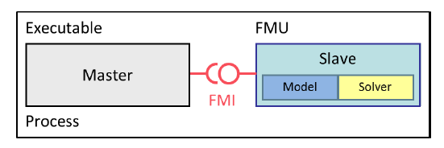
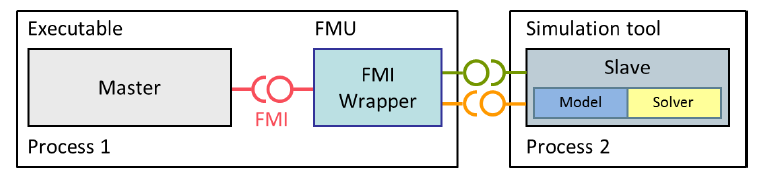
The exported FMUs behave as Slaves whereas tools that import them behave as Masters. The masters are responsible for all the data exchange and time synchronization. Also, the data exchange between the Slaves is handled via the master only. There is no direct communication between the slaves.
The data exchange between the Master and Slave is restricted to discrete communication points. This is best explained with the most common master algorithm. This algorithm stops the simulation at each communication point, collects the outputs from all Slaves, calculates the Slave inputs, distributes these inputs to the Slaves and continues the (co-)simulation with the next communication step, with fixed communication step size.
The data flow at each communication point can be illustrated with the block diagram in Figure 3.
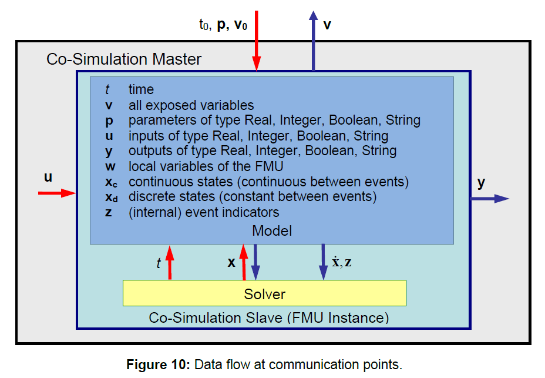
FMI support in the Typhoon HIL toolchain
As already mentioned above, the Typhoon HIL toolchain supports only FMI for Co-simulation. Also, only FMI version 2 is supported and only the import of FMU files is supported. This is enabled using FMU Import component from the library (Signal Processing -> Extras -> FMU Import).
Both HIL and Virtual HIL device support the FMU import functionality. If HIL device is used, source code files must be included in the FMU file. If Virtual HIL is used, both source code and win64 library can be used. If both are specified, the win64 library will be used. Therefore, if the source code is to be used, the win64 library should be removed from the FMU file.
Also, if HIL device is used, Co-simulation must be standalone. This means that tool coupling is not possible and the model solver must be included in the FMU. This is not the limitation for Virtual HIL, but the asynchronous execution will not work correctly. In other words, Do Step function must not return the status “Pending” because the Master algorithm is not designed to support this.
The Master algorithm is presented in the block diagram in Figure 4.
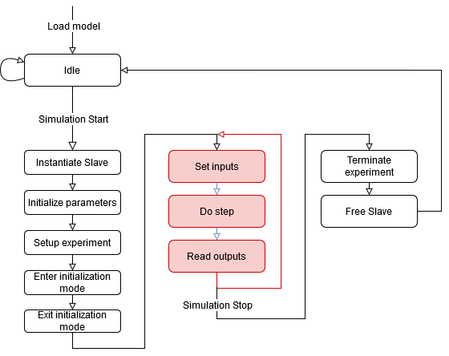
- Initialize Slave – in this step the fmi2Instantiate function is called that allocates all the necessary resources for the Slave model
- Initialize Parameters – fmi2SetReal, fmi2SetInteger and fmi2SetBoolean functions are called to initialize all the constant inputs and parameter values.
- Setup Experiment – fmi2SetupExperiment function is called. The start time is defined as 0 and stop time is not defined.
- Enter initialization mode – fmi2EnterInitializationMode function is called.
- Exit initialization mode – fmi2ExitInitializationMode function is called.
- Set inputs – this step is called during the simulation and it initializes the Slaves inputs and tunable parameters by calling the fmi2SetReal, fmi2SetInteger and fmi2SetBoolean functions.
- Do step – fmi2DoStep function is called which triggers the Slave to do one simulation step. Defined simulation step is equal to the execution rate defined in the schematic model.
- Read outputs - fmi2GetReal, fmi2GetInteger and fmi2GetBoolean functions are called to obtain the Slave output values.
- Terminate experiment – fmi2Terminate function is called that terminates the experiment.
- Free Slave – fmi2FreeInstance function is called to free all the resources allocated in Initialize Slave step.
It is important to note that return values, of any function call, except for fmi2DoStep, are not checked and the Master expects the OK status as a return value.
For the fmi2DoStep function, the return value is read and sent to the output Status port on the FMU Import component. The return value is of type fmi2Status, which is an enumeration consisting of several possible status values: fmi2OK, fmi2Warning, fmi2Discard, fmi2Error, fmi2Fatal, and fmi2Pending. Table 1 illustrates the relationship between the returned status of the fmi2DoStep function and the corresponding Status port value.
| Returned value of fmi2DoStep function | Status port value |
|---|---|
| fmi2OK | 0 |
| fmi2Warning | 1 |
| fmi2Discard | 2 |
| fmi2Error | 3 |
| fmi2Fatal | 4 |
| fmi2Pending | 5 |
FMU Import
The FMI Slave functionality is defined using the FMU Import component from the Schematic Editor library.
The component image, dialog window and properties are presented in Table 2.
| Component icon | Component dialog | Properties |
|---|---|---|
|
FMU Import |
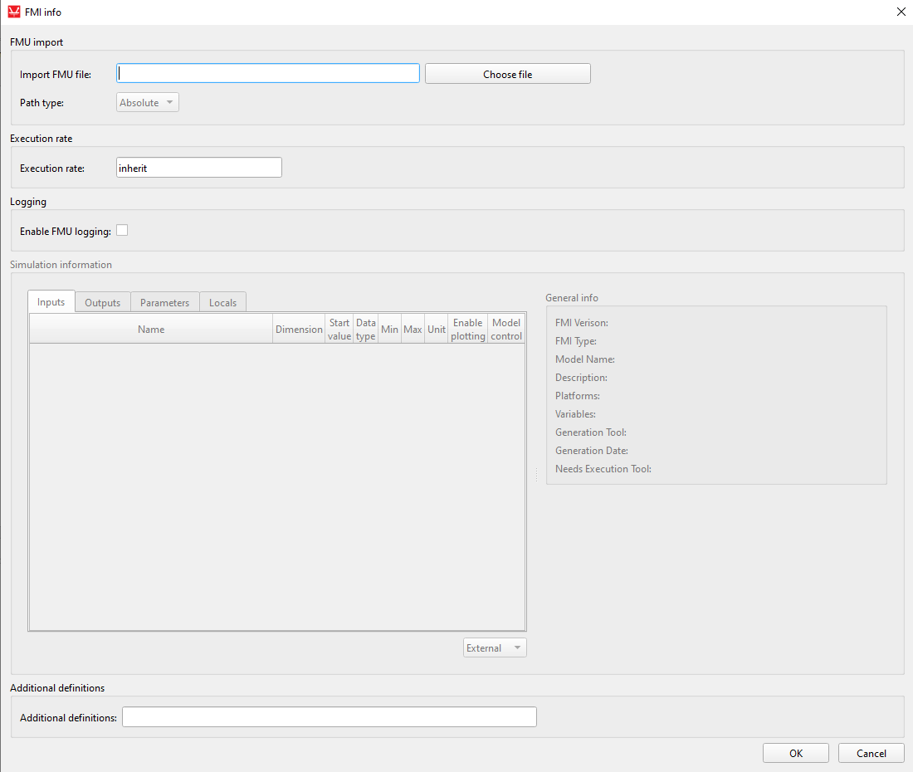 |
|
The Choose file button on components dialog window allows you to browse to desired FMU file.
If the FMU file is parsed correctly, the table will be updated from the variables extracted from the file. General info field will also be filled with the information from FMU file. The example of dialog window, once the FMU file is imported is illustrated below.
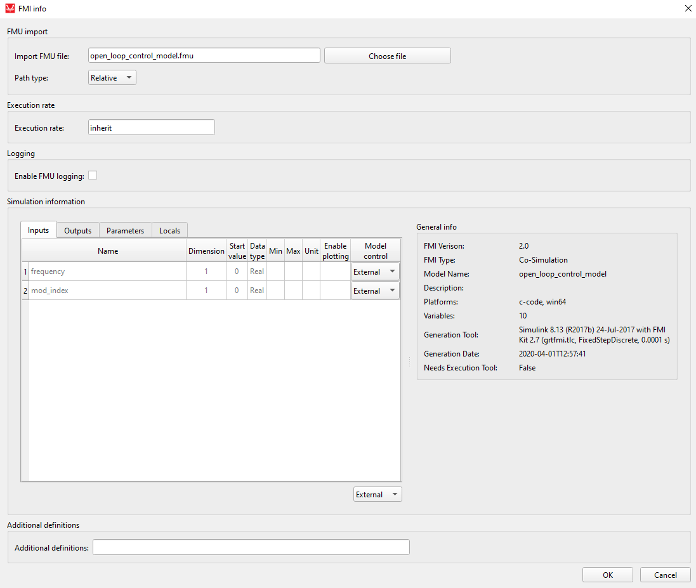
The Path type property lets you select the save format of the FMU file path. The absolute path will store the full system path to the FMU file, whereas relative path will save the path relative to the model directory. The relative path can be selected only if the model is saved first.
The Logging property enables the FMU logging option, and it is set to False by default. One of the arguments of the Initialize Slave function is the loggingOn parameter, which takes the value of this property. If logging is enabled, a log file will appear in the target folder of the simulated model. This option activates logging only for TyphoonSim and VHIL simulation. This log file will store all messages sent during the invocation of the logger function within the FMU file. If there are no logger function calls within the FMU file, the log file will be empty.
- Inputs – these are the input values for the FMU Slave. If Model control combo box is set to External, an input terminal will be created on the component that allows the user to connect the desired signal to this variable. By default, all Inputs are set to External. In this case, the Start value will be ignored and the value of the connected signal will be used. If Model control is set to Constant, the terminal will not be connected and the Start value will be used as the variable value. The Start value can be changed if Model control is set to Constant.
- Outputs – these are the outputs of the FMU Slave. Output terminal is created for each Output variable and it cannot be selected or deselected.
- Parameters – these are the parameters defined in the FMU Slave. Similar to Inputs, parameters can be constant or can be changed during simulation. If Model control is set to External, an input terminal will be created on the component to connect the desired signal. If Model control is set to Tunable, parameter can be changed during the simulation from Model Explorer which is available in HIL SCADA By default, all parameters are treated as constants. The Start value can be changed if Model control is set to Constant. Only variables available in Parameters tab can be set to tunable.
- Locals – these are local variables of the FMU Slave. The FMI define Locals as variables that can be read but their value cannot be used anywhere else in the simulation. Practically, this means that these values can be read, but they do not create any terminals on the component. If Enable plotting option is checked, a Probe component will be created inside the FMU Import component that will allow for that variable to be monitored in SCADA or read using API functions.
| Property name | Description |
|---|---|
| Name | Variable name. Also specifies the terminal name. |
| Dimension | Dimension of the variable. FMI version 2 supports only scalars so this value will always be 1. Vector values will be unwrapped in the FMU file and each element will be mapped as scalar. For example if ‘res’ is an output vector variable, three output variables will be present instead ‘res[0]’, ‘res[1]’, … |
| Start value | Initial value for the Inputs and Parameters. If the variable is not Model controlled, this value can be changed. |
| Data type | Data type as specified in FMU file. All data types are supported (Real, Integer, Boolean, Enumeration and String) but only Real, Integer and Boolean variables can be controlled externally through a signal from the model. In other words, only these three variables can crate terminals on the component. |
| Min | Minimal allowed variable value. |
| Max | Maximal allowed variable value. |
| Unit | Variable unit as defined in FMU. The value of this property will not alter the variable value in any way. If a unit is nonstandard (ex. mi/h), the conversion to km/h or m/s must be added by the user. |
| Enable plotting | Used for Locals. If checked, the variable can be observed in SCADA or read using API functions. |
| Model control | Used for Inputs, Parameters. If set to External, an input terminal is created on the component to allow the user to connect the desired signal from the model. Model control in the Parameter tab can be also set to Tunable. |
As mentioned in the About FMI standard section, the FMU is essentially a collection of binary files and C code zipped in a single archive. This means that a C compiler is called in order to compile the code into an executable running on a HIL device. Most of the time, FMUs do not require any additional definitions to be passed to the compiler, but in a case where it is required, the Additional definitions property serves this purpose. For example, the code may contain the NO_MULTITHREADED_SUPPORT definition that handles code execution for a platform that support multi-threading. Since HIL devices do not support multi-threading, this definition must be included in the Additional definitions as shown in Figure 6.
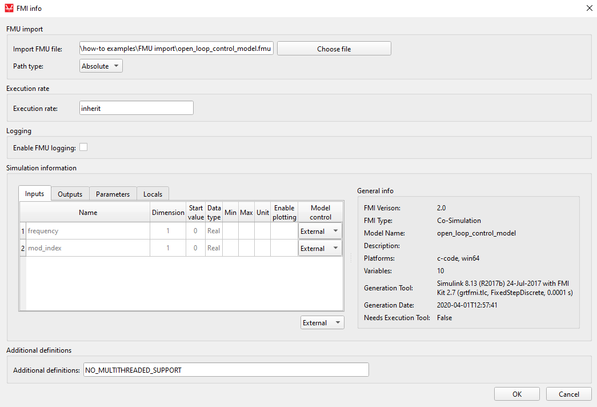
If there are more than one definition, they are separated using a single space.
One definition that is included by default is FMI2_FUNCTION_PREFIX. This definition assures that all the FMU functions have appropriate prefixes and there is no need to manually declare them.
Additional resources
The FMI standard defines that the resources folder can exist in the FMU archive. If any additional resources are required for the simulation to work properly, these resources are stored in this folder. Usually, these are some empirical data, parameters, tables, or even additional DLLs.
The Signal Processing code running on the HIL device is executed as a bare-metal application and this means that file system calls are not supported on the HIL device. In addition this means that the resources folder is of no use since the HIL device cannot open any file to extract data; this folder will simply be ignored. Please consider this when implementing an FMU on a HIL device, as this may greatly alter simulation results.
When running a simulation using VHIL, the resources folder will be used and the simulation will run as normal.
Usage example
The use of the FMU Import component will be illustrated on the Induction Machine Open Loop Control example model (examples\models\how-to examples\FMU import\fmu import.tse).
The example model is presented in Figure 7.
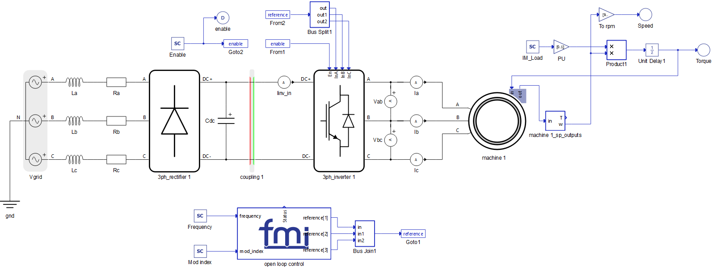
Open loop control is designed using the FMU Import component and it is located on the bottom of the schematic. There are two inputs and one output of this control. The inputs are Frequency and Modulation index and the output is the reference signal for 3 phase rectifier. The same control is previously created in MATLAB Simulink (Figure 8).
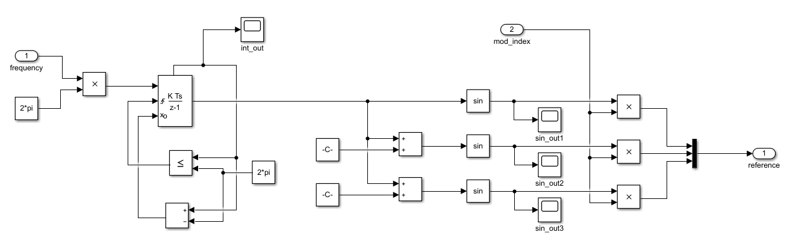
The Simulink model is then exported as an FMU file and imported into the Typhoon HIL toolchain through the FMU Import component, eliminating the need to create open loop control using the Signal Processing components. The use of this standard simplifies model transfer between tools. Instructions on how to export FMU files from MATLAB Simulink is explained in Exporting FMU files from MATLAB Simulink.
Exporting FMU files from MATLAB Simulink
From the 2021a version, MATLAB enables its users to export a Simulink model to an FMU archive.
- In order to define Inputs and Outputs in the FMU model, Inport and
Outport components must be used as shown in Figure 9
Figure 9. Inport and Outport components 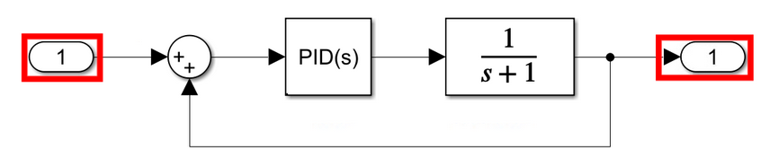
- In the Model settings (Figure 10), the Solver Type must be defined as Fixed-step with a
specified value as in Figure 11
Figure 10. Model settings 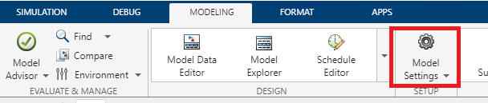
Figure 11. Solver settings 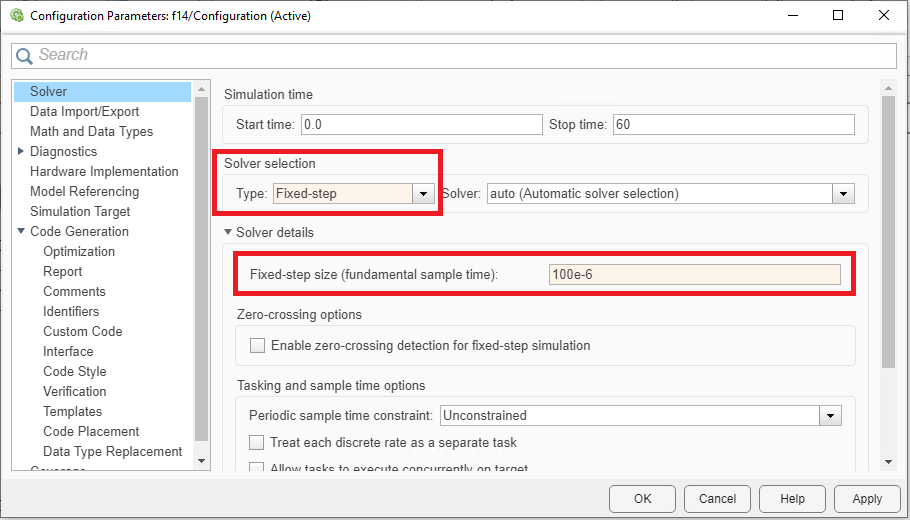
- In order for the real-time HIL platform to be able to run the FMU model, the
Hardware target must be correctly specified. First, the System target file
must be defined as realtime.tlc and second, the Device type should be
specified as ARM Cortex-A. Figure 12 and Figure 13 illustrate this.
Figure 12. System target settings 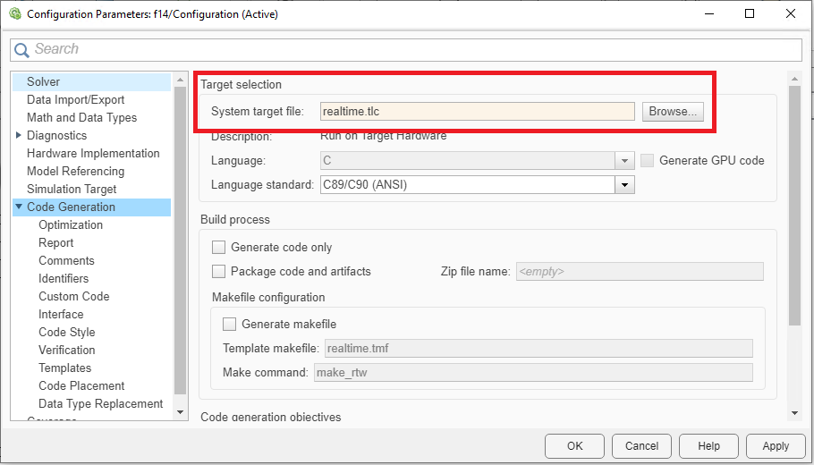
Figure 13. Device type settings 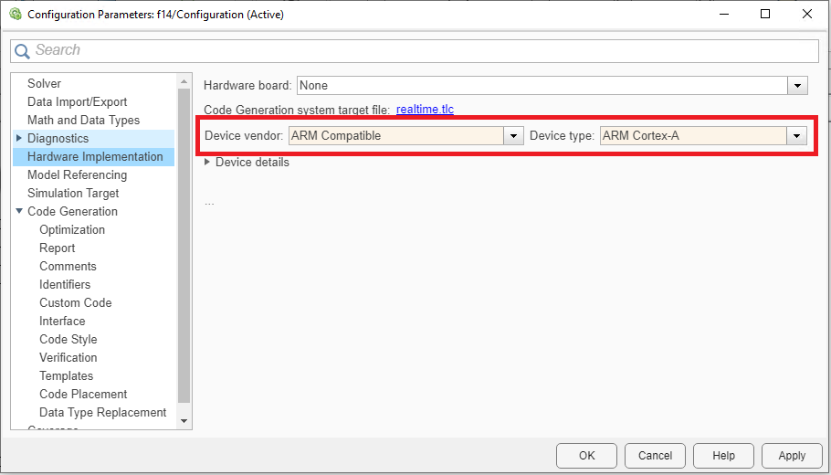
- To export the FMU file, select Standalone FMU option in the Save drop-down
menu and make sure to include the source code in the FMU archive as in Figure 14.
Figure 14. Export standalone FMU 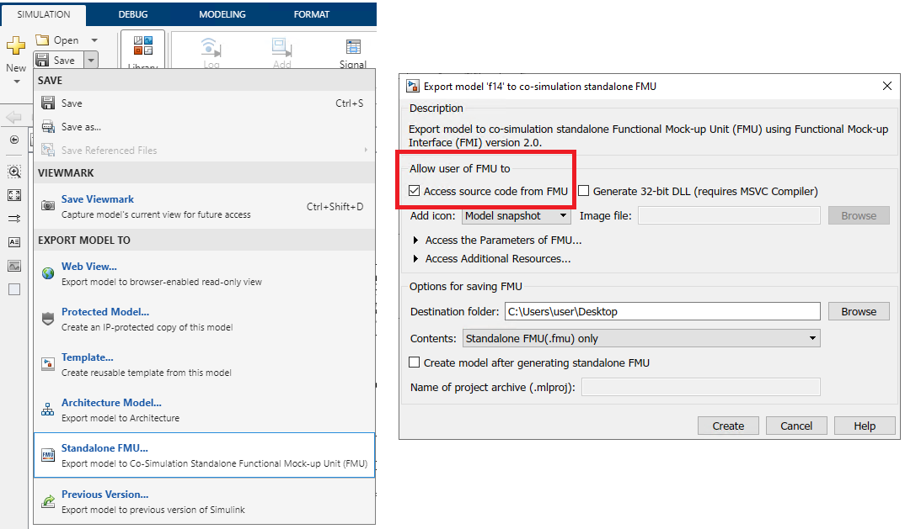